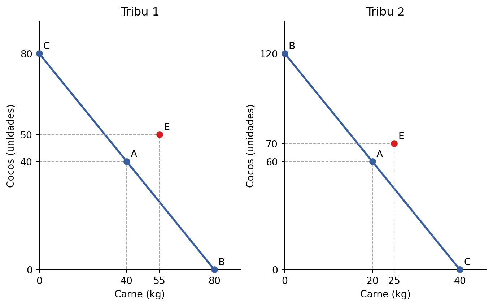

10 Economías abiertas
10.1 Introducción
Muchos de los bienes que consumimos se producen en otros países y muchos de los que producimos se consumen en otros países. Las exportaciones son las ventas de bienes y servicios nacionales a otros países. Las importaciones son las compras de bienes y servicios extranjeros que realizan los residentes de un país.
¿Qué lleva a los países a comprar en el exterior una parte de lo que consumen? ¿Por qué no la producen internamente? Para responder a estas preguntas, examinaremos las ganancias que pueden obtener con la especialización y el comercio.
Si no existe una moneda global, ¿cómo se paga en el comercio exterior? Las monedas pueden intercambiarse unas por otras. La relación a la que se intercambian se denomina tipo de cambio.
10.2 La balanza de pagos
La balanza de pagos es un documento contable que registra el importe de todas las operaciones comerciales y financieras entre los residentes de un país y los residentes del resto del mundo durante un periodo determinado, generalmente un año. Se compone de tres grandes cuentas (corriente, de capital y financiera), que se dividen a su vez en subcuentas.
10.2.1 Cuenta corriente
La cuenta corriente de la balanza de pagos comprende cuatro partidas, como recoge la Tabla 10.1.
- Mercancías. Comprende las exportaciones e importaciones de bienes.
- Servicios. Recoge transacciones de productos intangibles, relacionadas con el transporte, los seguros, el turismo, las comunicaciones y los viajes, entre otros servicios.
- Rentas. Incluye tanto las rentas del capital financiero, como los intereses y otras rentas de inversión, como las rentas del trabajo.
- Transferencias corrientes. Son operaciones sin contrapartida económica directa, como las remesas de los migrantes y la ayuda al desarrollo.
| Partida | Ingresos | Pagos | Saldo (Ingresos − pagos) |
|---|---|---|---|
| Mercancías | Exportaciones | Importaciones | |
| Servicios | Exportaciones | Importaciones | |
| Rentas | Entradas | Salidas | |
| Transferencias corrientes | Entradas | Salidas | |
| Cuenta corriente | Total de ingresos | Total de pagos | Ingresos − pagos |
10.2.2 Cuenta de capital
La cuenta de capital incluye dos grandes partidas. La primera recoge las transferencias de capital sin contrapartida; en España, estas son fundamentalmente las que se reciben desde la Unión Europea a través de los fondos de cohesión o del FEDER. La segunda partida recoge las transacciones de activos no producidos o intangibles, como la compraventa de patentes y derechos de autor.
Las entradas de transferencias de capital y la venta de activos se anotan como ingresos. Las salidas de transferencias de capital y la compra de activos se anotan como pagos (Tabla 10.2).
| Partida | Ingresos | Pagos | Saldo (Ingresos − pagos) |
|---|---|---|---|
| Capital | Entradas | Salidas |
10.2.3 Cuenta financiera
La cuenta financiera recoge las siguientes operaciones (Tabla 10.3).
- Inversiones. Comprenden la adquisición de activos, como inmuebles y valores negociables, entre ellos acciones, bonos y obligaciones.
- Otra inversión. Incluye los préstamos comerciales y financieros, así como los depósitos.
- Variación de reservas. Recoge las variaciones netas de las reservas, que incluyen moneda extranjera y oro monetario.
| Partida | Variación de pasivos (VP) | Variación de activos (VA) | Saldo (VP-VA) |
|---|---|---|---|
| Inversiones | De extranjeros en el país | De nacionales en el extranjero | |
| Otra inversión | Préstamos obtenidos | Préstamos concedidos | |
| Variación de reservas | Aumento neto de reservas | ||
| Cuenta financiera |
10.2.4 Los saldos de la balanza de pagos
Desde el punto de vista contable, la balanza de pagos siempre está equilibrada. Sin embargo, cada una de sus distintas cuentas (corriente, de capital y financiera) puede presentar un saldo negativo (déficit) o positivo (superávit). El déficit registrado en una cuenta siempre se compensa con el superávit de otra.
Por ejemplo, con el criterio de signos de la Tabla 10.3, un déficit por cuenta corriente se corresponde con un superávit conjunto de las cuentas de capital y financiera. Puede financiarse mediante préstamos, inversiones procedentes del exterior o salidas de divisas. Cuando un déficit por cuenta corriente persiste y se financia mediante préstamos, crece la deuda externa.
10.3 Las causas del comercio internacional
¿Por qué existe el comercio internacional? Para responder a esta pregunta, consideremos dos tribus que disponen de los mismos recursos productivos y necesitan dos bienes, carne y cocos. En autarquía, cada tribu consume exactamente lo que produce. La situación A de la Tabla 10.4 ilustra este caso. Entre las dos tribus producen y consumen 60 kg de carne y 100 cocos al día.
| Situación | Tribu 1, carne (kg) | Tribu 1, cocos | Tribu 2, carne (kg) | Tribu 2, cocos | Carne total (kg) | Cocos totales |
|---|---|---|---|---|---|---|
| B | 80 | 0 | 0 | 120 | 80 | 120 |
| A | 40 | 40 | 20 | 60 | 60 | 100 |
| C | 0 | 80 | 40 | 0 | 40 | 80 |
10.3.1 Ventaja absoluta y posibilidades de consumo con especialización y comercio
Una tribu tiene ventaja absoluta en la producción de un bien si puede producir más cantidad que la otra con los mismos recursos. En nuestro ejemplo, la tribu 1 tiene ventaja absoluta en la producción de carne: si dedica todos sus recursos a producir este bien, obtiene 80 kg, mientras que la tribu 2 obtiene 40 kg. La tribu 2 tiene ventaja absoluta en la producción de cocos, pues puede obtener 120 al día, frente a los 80 de la tribu 1.
De las tres situaciones de la tabla, la B es la más eficiente. Al especializarse cada tribu en el bien en el que tiene ventaja absoluta, entre ambas producen más carne y más cocos. En la situación C, cada tribu se especializa en el bien en el que la otra tiene ventaja absoluta; con esta especialización, la producción de ambos bienes es inferior a la de la situación A y a la de la situación B.
10.3.2 Especialización, intercambio y consumo
Supongamos que, tras especializarse, las tribus intercambian 25 kg de carne por 50 cocos. La tribu 1 produce 80 kg de carne, vende 25 kg y consume 55 kg, además de los 50 cocos que compra. La tribu 2 produce 120 cocos, vende 50 y consume 70, además de los 25 kg de carne que compra. La Tabla 10.5 permite comparar estas cantidades con las de autarquía.
| Régimen | Operación | Tribu 1, carne (kg) | Tribu 1, cocos | Tribu 2, carne (kg) | Tribu 2, cocos |
|---|---|---|---|---|---|
| Autarquía | Produce | 40 | 40 | 20 | 60 |
| Vende | 0 | 0 | 0 | 0 | |
| Compra | 0 | 0 | 0 | 0 | |
| Consume | 40 | 40 | 20 | 60 | |
| Especialización e intercambio | Produce | 80 | 0 | 0 | 120 |
| Vende | 25 | 0 | 0 | 50 | |
| Compra | 0 | 50 | 25 | 0 | |
| Consume | 55 | 50 | 25 | 70 |
Como muestra la Figura 10.1, las dos tribus pasan de consumir la combinación A a consumir la combinación E. Ambas consumen más de los dos bienes y alcanzan una combinación situada fuera de sus respectivas fronteras de posibilidades de producción.
10.4 El principio de la ventaja comparativa
Ya hemos visto que existen incentivos para comerciar si cada país tiene ventaja absoluta en un bien diferente. Pero, ¿qué ocurre si un país tiene ventaja absoluta en todos los bienes? ¿No existen entonces incentivos para comerciar? La respuesta es que sí, siguen existiendo razones para recurrir al comercio internacional.
Lo que determina las ganancias del intercambio no es la ventaja absoluta, sino la ventaja comparativa. Un país tiene ventaja comparativa en la producción de un bien cuando puede producirlo con un menor coste de oportunidad que otro país.
En la Figura 10.1, el coste de oportunidad de un kilogramo de carne se obtiene dividiendo la cantidad de cocos a la que se renuncia (el bien que se sacrifica) entre los kilogramos adicionales de carne que se producen (el bien que se gana). Este cociente es el valor absoluto de la pendiente de la frontera de posibilidades de producción (FPP).
\[ \begin{aligned} \text{Tribu 1:}\quad |\text{pendiente de la FPP}| &= \frac{40\ \text{cocos}}{40\ \text{kg de carne}} = 1\ \text{coco por kg de carne}. \\ \text{Tribu 2:}\quad |\text{pendiente de la FPP}| &= \frac{60\ \text{cocos}}{20\ \text{kg de carne}} = 3\ \text{cocos por kg de carne}. \end{aligned} \]
El comercio reporta ganancias a ambas partes si la relación real de intercambio (RRI) se sitúa entre sus respectivos costes de oportunidad. En el ejemplo, las tribus intercambian 50 cocos por 25 kg de carne. La misma operación puede expresarse en cualquiera de los dos sentidos.
\[ \mathrm{RRI}_{\text{cocos por kg de carne}} = \frac{50\ \text{cocos}}{25\ \text{kg de carne}} = 2\ \text{cocos por kg de carne}. \]
\[ \mathrm{RRI}_{\text{kg de carne por coco}} = \frac{25\ \text{kg de carne}}{50\ \text{cocos}} = 0{,}5\ \text{kg de carne por coco}. \]
Por cada kilogramo de carne que vende, la tribu 1 recibe dos cocos, aunque producir ese kilogramo solo le cuesta un coco. La tribu 2 entrega dos cocos por un kilogramo de carne que le habría costado tres cocos producir por sí misma.
10.5 Las medidas proteccionistas
Si el comercio internacional permite aumentar la producción y el consumo totales, ¿por qué genera oposición? El comercio beneficia a los consumidores, que acceden a más bienes y a precios más bajos, y a los productores que exportan, que pueden vender más y a mejores precios. Sin embargo, también perjudica a los productores que compiten con las importaciones y a los trabajadores de esos sectores.
Cuando los grupos perjudicados por las importaciones presionan con éxito, los gobiernos pueden imponer medidas proteccionistas, también llamadas barreras al comercio. Dos de ellas son los aranceles y los contingentes.
- Los aranceles son impuestos sobre los bienes importados. Encarecen el producto extranjero y reducen su competitividad frente al producto nacional.
- Los contingentes fijan la cantidad máxima que puede importarse de un bien. En el caso extremo, un contingente igual a cero equivale a prohibir la importación.
10.6 Los pagos internacionales y el mercado de divisas
10.6.1 El tipo de cambio nominal
La mayor parte del comercio internacional no se realiza intercambiando directamente unos bienes por otros, sino utilizando dinero. Como no existe una moneda global, para pagar en otra moneda es necesario intercambiar monedas.
El tipo de cambio nominal (\(t_c\)) es el precio de una moneda expresado en unidades de otra.
Por ejemplo: si hacen falta 1,25 dólares para obtener un euro, el tipo de cambio del euro respecto al dólar es de 1,25 dólares por euro; el del dólar respecto al euro se obtiene tomando la inversa:
\[ t_c^{\text{dólares por euro}} = 1{,}25, \qquad t_c^{\text{euros por dólar}} = \frac{1}{1{,}25} = 0{,}80. \]
10.6.2 Los sistemas de tipos de cambio
Un sistema de tipo de cambio (o régimen cambiario) define cómo se determina el valor de una moneda frente a otras en el mercado internacional. La elección del régimen es una decisión clave de política económica y monetaria de cada país o unión monetaria. Existen dos regímenes cambiarios diferentes: tipo de cambio fijo y tipo de cambio flexible.
En un sistema de tipo de cambio fijo, el banco central establece un tipo de cambio y se compromete a mantenerlo en un nivel determinado mediante su política monetaria, fundamentalmente sus tipos de interés. En un régimen de tipo de cambio fijo, los términos revaluación y devaluación designan, respectivamente, un aumento o una reducción oficial del tipo fijado.
Bajo un sistema de tipo de cambio flexible, el banco central deja que la moneda fluctúe libremente en el mercado, lo que le permite fijar libremente sus tipos de interés para perseguir otros objetivos, como la estabilidad de precios. En este caso, el tipo de cambio de la moneda puede variar en función de la oferta y la demanda. Si este tipo de cambio se expresa como las unidades de moneda extranjera que es necesario entregar para obtener una unidad de moneda nacional, se dice que se ha dado una apreciación de la moneda nacional cuando su tipo de cambio aumenta, y una depreciación cuando su tipo de cambio disminuye.
10.6.3 El sistema de cambio flexible
En la actualidad, la mayor parte de las áreas monetarias, incluida la eurozona, se rigen por un sistema de tipo de cambio flexible frente al resto de monedas internacionales.
10.6.3.1 Demanda de divisas
¿Quiénes demandan euros? Los agentes que necesitan euros para comprar productos o activos denominados en euros. Entre ellos figuran los compradores extranjeros de bienes y servicios europeos, como una empresa estadounidense o un turista británico, y los inversores extranjeros que compran activos europeos, como quienes adquieren deuda pública o invierten en empresas europeas.
La función de demanda de euros relaciona la cantidad demandada con el tipo de cambio (\(t_c\)), los precios europeos y extranjeros (\(P_{\mathrm{UE}}\) y \(P_{\mathrm{ext}}\)), la renta extranjera (\(Y_{\mathrm{ext}}\)) y la diferencia entre los tipos de interés europeo y extranjero (\(r_{\mathrm{UE}}-r_{\mathrm{ext}}\)). Los signos indican cómo varía la cantidad demandada cuando aumenta cada variable y las demás permanecen constantes.
\[ D^{\mathrm{euros}} = f\!\left( \underset{-}{t_c},\; \underset{-}{P_{\mathrm{UE}}},\; \underset{+}{P_{\mathrm{ext}}},\; \underset{+}{Y_{\mathrm{ext}}},\; \underset{+}{r_{\mathrm{UE}}-r_{\mathrm{ext}}} \right). \]
La curva de demanda de euros recoge la relación entre el tipo de cambio y la cantidad demandada bajo la cláusula ceteris paribus. A lo largo de la curva solo varía el tipo de cambio y se mantienen constantes los precios, la renta y los tipos de interés.
10.6.3.2 Oferta de divisas
¿Quiénes ofrecen euros? Los agentes que necesitan moneda extranjera para comprar productos o activos denominados en moneda extranjera. Entre ellos están los compradores europeos de bienes y servicios extranjeros, como los importadores de productos chinos o los turistas españoles en Marruecos, y los inversores europeos que compran activos extranjeros, como quienes adquieren deuda pública extranjera o invierten en empresas del exterior.
La función de oferta de euros depende del tipo de cambio, de los precios europeos y extranjeros, de la renta europea (\(Y_{\mathrm{UE}}\)) y del diferencial de tipos de interés.
\[ O^{\mathrm{euros}} = f\!\left( \underset{+}{t_c},\; \underset{+}{P_{\mathrm{UE}}},\; \underset{-}{P_{\mathrm{ext}}},\; \underset{+}{Y_{\mathrm{UE}}},\; \underset{-}{r_{\mathrm{UE}}-r_{\mathrm{ext}}} \right). \]
10.6.4 El tipo de cambio real
El tipo de cambio real (\(e\)) indica la relación a la que pueden intercambiarse los bienes de un país por los de otro. Para calcularlo, se comparan los precios nacionales y extranjeros expresados en la misma moneda.
Si \(t_c\) es el tipo de cambio del euro respecto al dólar, expresado en dólares por euro, los precios se convierten del siguiente modo.
\[ \begin{aligned} \text{Precio en dólares} &= \text{Precio en euros}\cdot t_c, \\ \text{Precio en euros} &= \frac{\text{Precio en dólares}}{t_c}. \end{aligned} \]
Sean \(P_n\) el precio medio nacional en moneda nacional y \(P_{\mathrm{ext}}\) el precio medio extranjero en moneda extranjera. El producto \(P_n\,t_c\) expresa el precio medio nacional en moneda extranjera. Por tanto,
\[ e = \frac{P_n\,t_c}{P_{\mathrm{ext}}}. \]
Por ejemplo, supongamos que una cesta nacional cuesta 200 euros, que una cesta extranjera cuesta 100 dólares y que el tipo de cambio es de 1,25 dólares por euro. Entonces,
\[ e = \frac{200\ \text{euros}\cdot 1{,}25\ \text{dólares por euro}} {100\ \text{dólares}} = \frac{250\ \text{dólares}}{100\ \text{dólares}} = 2{,}5. \]
Para comprar una cesta de bienes nacional hay que renunciar a 2,5 cestas en el extranjero.
La evolución del tipo de cambio real indica si los bienes y servicios nacionales se encarecen o se abaratan respecto a los extranjeros. Si las demás variables permanecen constantes, se encarecen cuando \(P_n\) sube, \(t_c\) sube o \(P_{\mathrm{ext}}\) baja. Se abaratan cuando \(P_n\) baja, \(t_c\) baja o \(P_{\mathrm{ext}}\) sube.
10.6.5 La paridad del poder adquisitivo
Según la teoría de la paridad del poder adquisitivo (PPA), a largo plazo el tipo de cambio nominal entre dos monedas tiende al nivel al que una determinada cantidad de dinero permite comprar la misma cantidad de bienes en los dos países. Con la definición anterior del tipo de cambio real, esta condición se expresa como \(e=1\).
Supongamos que una cesta de bienes cuesta 10 euros en Europa y 20 dólares en Estados Unidos. Según la PPA, el tipo de cambio del euro tenderá a 2 dólares por euro. A ese tipo de cambio, con 20 dólares se puede comprar una cesta en Estados Unidos o comprar 10 euros y, con ellos, comprar la misma cesta en Europa.
- Si el tipo de cambio es de 1 dólar por euro, los 20 dólares permiten comprar una cesta en Estados Unidos. Si se cambian por 20 euros, permiten comprar dos cestas en Europa. Aumenta la demanda de euros y el tipo de cambio del euro tiende a subir.
- Si el tipo de cambio es de 4 dólares por euro, los 20 dólares permiten comprar una cesta en Estados Unidos. Si se cambian por 5 euros, solo permiten comprar media cesta en Europa. Disminuye la demanda de euros y el tipo de cambio del euro tiende a bajar.